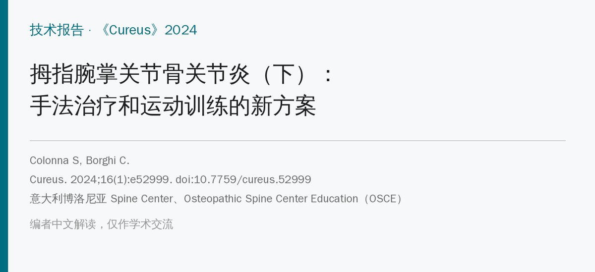
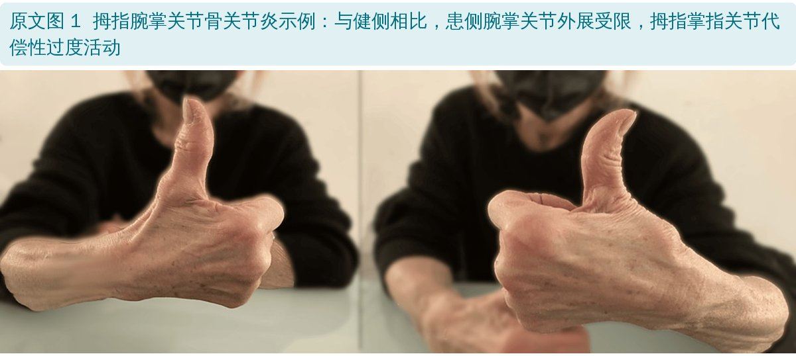
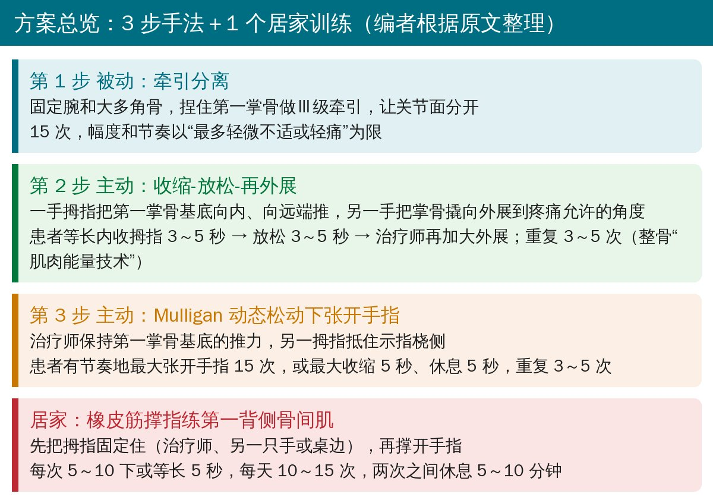
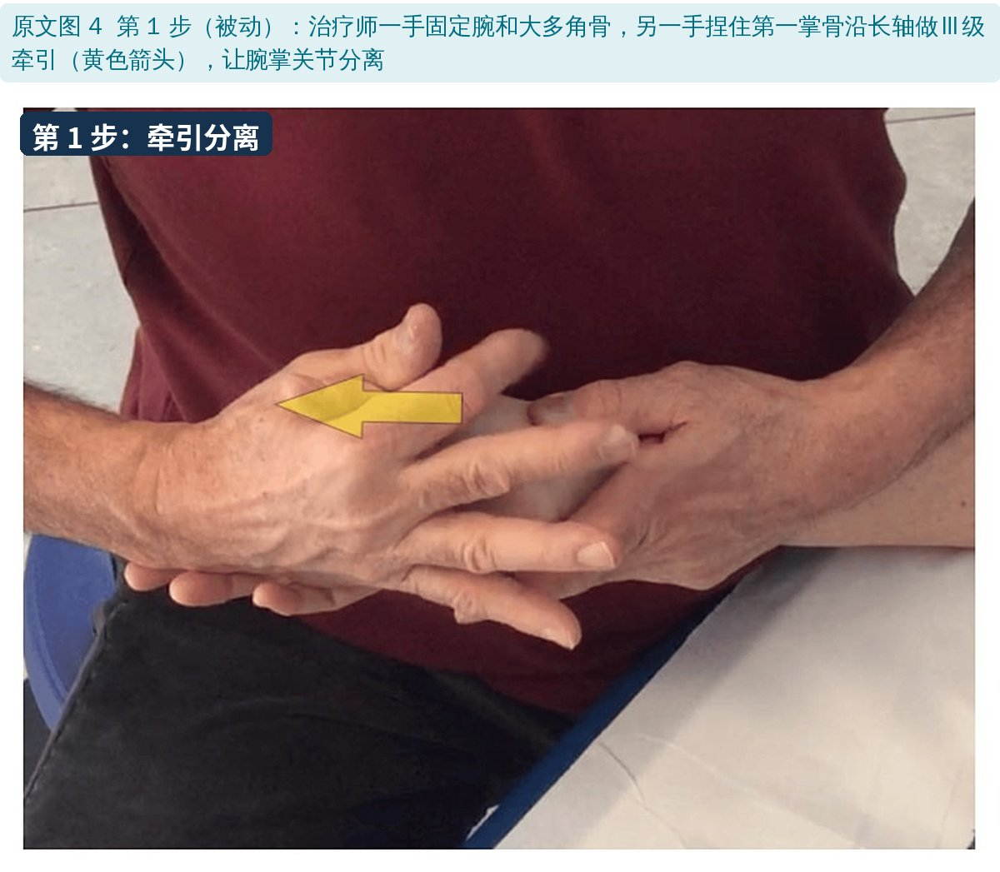
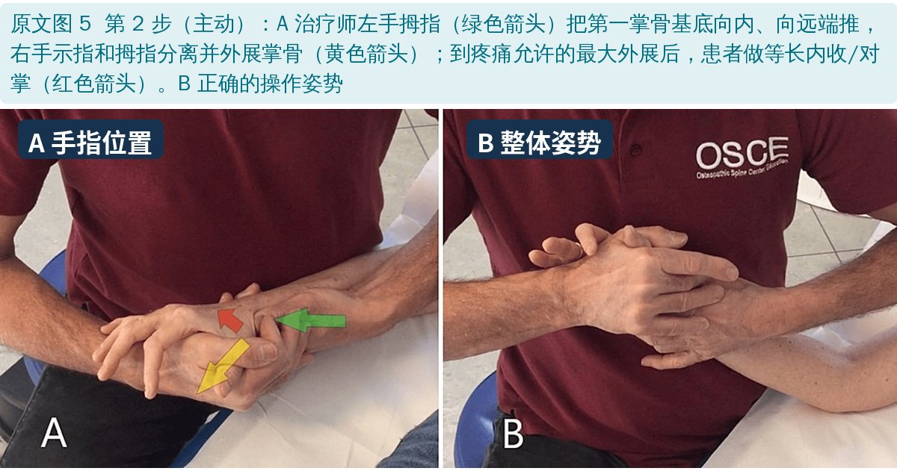
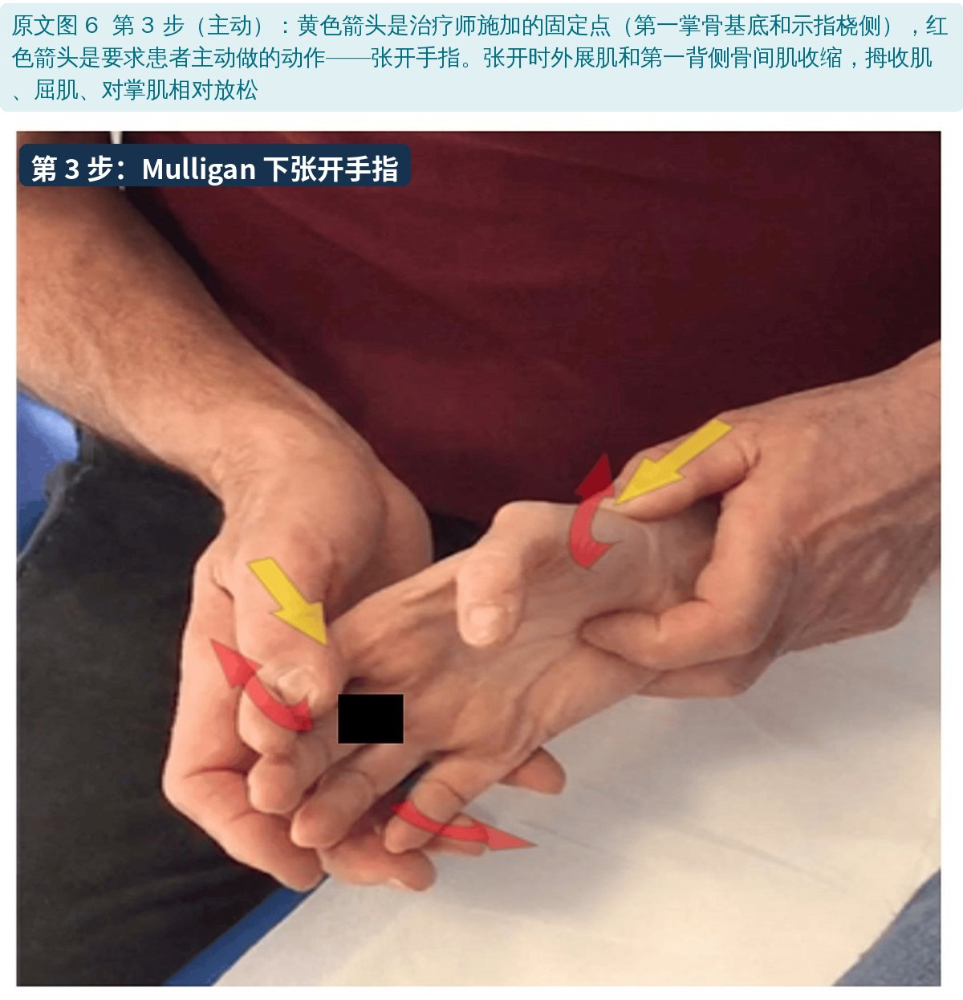
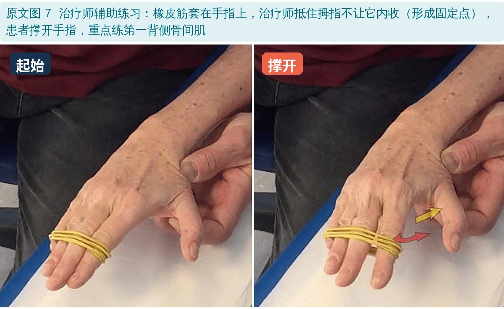
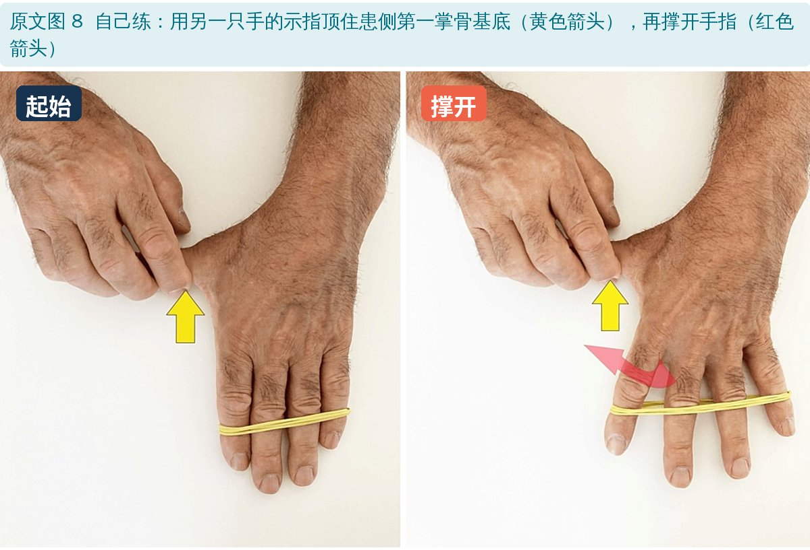
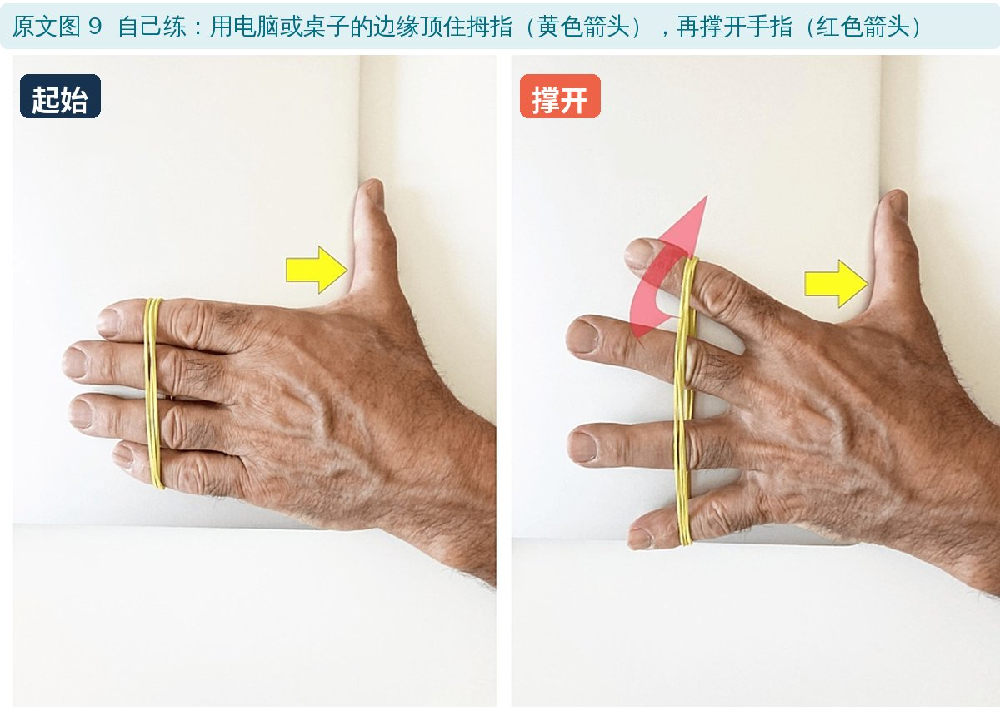
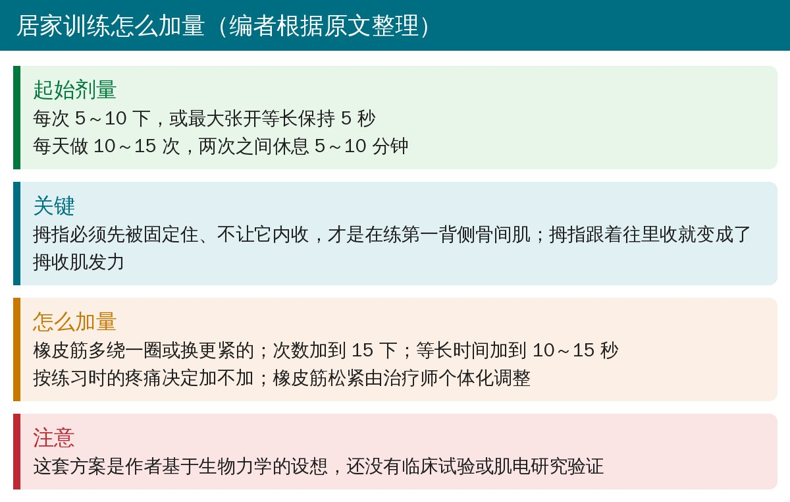

🔖原文信息（编者中文重排）
📚 文献信息
▪ Colonna S, Borghi C. Rhizarthrosis Part II: A New Approach of Manual Therapy and Therapeutic Exercise. Cureus. 2024;16(1):e52999. doi:10.7759/cureus.52999
▪ 作者单位：意大利博洛尼亚 Spine Center、Osteopathic Spine Center Education（OSCE）
▪ 文章类型：技术报告（提出方案，没有患者数据；上篇是文献综述）
上篇介绍过，拇指腕掌关节骨关节炎在Eaton-Littler Ⅰ、Ⅱ期首选保守治疗。但作者指出两个空白：
• 手法技术没有比较：神经动力学、Kaltenborn、Mulligan、Maitland 这几种技术的研究几乎都出自同一个团队，没有比较过哪种更好
• 运动训练不够专门：唯一结合手法和运动的研究用的是一套并非针对腕掌关节、也非针对手骨关节炎的通用练习
所以作者从腕掌关节的生物力学出发，提出3 步手法＋以第一背侧骨间肌为核心的居家训练。

🔖原文图 1：患侧外展受限
• 稳定靠韧带（主要是前斜韧带和背桡侧韧带）和肌肉的平衡；前斜韧带松弛被认为是软骨退变的起点
• 用指尖捏 1 kg 时，腕掌关节承受约 12 kg 压力
• 第一背侧骨间肌：起于第一、第二掌骨，止于示指近节。尸体实验中，侧捏时去掉它的张力，第一掌骨基底向桡侧半脱位，恢复张力后复位
• 掌骨屈曲约 30° 时关节最吻合。此时拇收肌（斜头）和拇对掌肌把掌骨基底往桡侧推（促半脱位），第一背侧骨间肌则对抗这个力
• 作者的推论：多用第一背侧骨间肌、少用拇收肌，可以减少关节囊韧带的牵拉和软骨的挤压

🔖方案总览（编者根据原文整理）
患者仰卧或坐位，治疗师坐在患侧。

🔖原文图 4：腕掌关节牵引分离
• 靠近患者的手固定腕（桡骨）、拇指压住大多角骨；同侧手的拇指和示指捏住第一掌骨；另一只手抓住拇指近节，做Ⅲ级牵引，让关节面分开
• 做 15 次，幅度和节奏以最多轻微不适或轻痛为限

🔖原文图 5：第 2 步的手法
• 握腕那只手的拇指找到腕掌关节线，把第一掌骨基底向内、向远端推
• 另一只手的示指和拇指像撬杠一样把掌骨推向外展，到疼痛允许的最大角度
• 患者等长内收拇指 3～5 秒 → 放松 3～5 秒 → 治疗师两手合力再加大外展（仍在疼痛范围内）
• 重复 3～5 次。这是整骨的“肌肉能量技术”，目的是拉长把掌骨基底维持在错误位置的僵硬肌筋膜

🔖原文图 6：在固定点下主动张开手指
• 治疗师保持对第一掌骨基底向内、向远端的推力，另一只手的拇指抵住示指桡侧
• 患者有节奏地最大张开手指 15 次，或最大收缩 5 秒、休息 5 秒，重复 3～5 次
• 张开手指时外展肌和第一背侧骨间肌（作为示指外展肌）收缩，拇收肌、屈肌、对掌肌相对放松
• Mulligan 动态松动的原则：在无痛的矫正滑动下做原本会痛的动作；以前认为是纠正了“位置错误”，现在更多认为是神经生理机制，还可能包括降低运动恐惧和安慰剂效应

🔖原文图 7：治疗师辅助

🔖原文图 8：用另一只手固定

🔖原文图 9：用桌边固定
• 橡皮筋套在手指上，最大限度张开手指，每次 5～10 下或等长保持 5 秒
• 关键是先固定拇指：不让腕掌关节内收，让它成为第一背侧骨间肌的固定点——可以由治疗师抵住、用另一只手的示指顶住第一掌骨基底，或用电脑、桌子的边缘顶住
• 这种练法几乎不让腕掌关节活动
• 理想频率：每天 10～15 次，两次之间休息 5～10 分钟

🔖剂量和进阶（编者根据原文整理）
• 完全是理论方案：没有任何患者数据，作者自己强调必须先做对照临床试验验证，并用肌电研究确认训练时到底是哪些肌肉在收缩
• “撑指练第一背侧骨间肌”未经验证：张开手指会同时动员所有背侧骨间肌、小指展肌等；第一背侧骨间肌能否被“选择性”强化，拇收肌是否真的被抑制，都没有测过
• 生物力学依据较老：关键证据来自数十年前的尸体和模型研究；第一背侧骨间肌的稳定作用也有不同看法
• 可取之处：手法步骤和居家练习描述得具体、器材简单，可以作为临床尝试和研究设计的起点；“先固定拇指再撑指”的提示很实用
• 橡皮筋位置：摘要和正文都写橡皮筋“套在拇指和小指之间”，但图 7～9 中橡皮筋套在示指到小指上，拇指被单独固定
• 训练频率前后不一：摘要写“全天重复”，正文写“每天 10～15 次、间隔 5～10 分钟”
• “掌骨头”还是“基底”：第 2、3 步正文写治疗师接触“掌骨头”（远端），图 5 图注和作用原理都是推第一掌骨的近端（基底）
• 牵引定义矛盾：与上篇相同，前一句说牵引垂直于关节面，后一句又说Ⅲ级牵引是“沿平行轴施加的额外力”
• 图 1 图注：写“拇指第一节外展增加”，实际表现是掌指关节代偿性过伸
• 第 2 步内容不一：正文让患者等长内收，图 5 图注写“等长内收/对掌”
• 引用夸大：讨论说已有文献证明运动“能纠正关节面的位置异常”，引用的却是 Mulligan“位置错误”假说的文献，作者在前文自己也说这一假说已被神经生理机制取代
• 其他：摘要中有一句重复了两遍；“MVMs”应为 MWMs；没有招募受试者却勾选了“已获受试者同意”
• 可以当作 Eaton Ⅰ、Ⅱ期患者的一个尝试方案：牵引分离 → 收缩-放松-再外展 → 固定下张开手指，再配合居家撑指训练
• 居家撑指的要点：一定先把拇指固定住（另一只手或桌边），不要让拇指跟着往里收
• 剂量以疼痛为指导：手法最多轻微不适，训练按疼痛决定是否加量
• 仍应配合支具、关节保护和日常动作调整；效果要用疼痛、捏力和功能问卷跟踪
• 这是未经验证的方案，向患者说明，并和已有证据的治疗（支具、运动、手法组合）一起使用
欢迎关注骨科康复小黄公众号，获取更多物理治疗的专业知识！
📄参考文献：
Colonna S, Borghi C. Rhizarthrosis Part II: A New Approach of Manual Therapy and Therapeutic Exercise. Cureus. 2024;16(1):e52999. doi:10.7759/cureus.52999
原文以 CC BY 4.0 协议开放获取，版权归原作者所有。本文为学术交流中文解读：原文图 1、4～9 引自原文，图中中文标签为编者所加；方案卡由编者整理。原文图 2、3 为经许可转载自其他出版物的图片，本文未使用。仅供学习交流，如有侵权请联系删除。